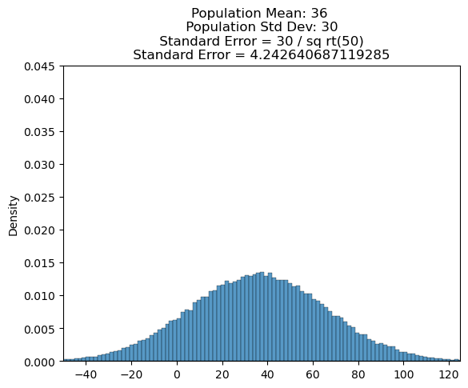

In statistics, we often want to learn about a large population. Since collecting data for an entire population is often impossible, researchers may use a smaller sample of data to try to answer their questions.
To do this, a researcher might calculate a statistic such as mean or median for a sample of data. Then they can use that statistic as an estimate for the population value they really care about.
For example, suppose that a researcher wants to know the average weight of all Atlantic Salmon fish. It would be impossible to catch every single fish. Instead, the researchers might collect a sample of 50 fish off the coast of Nova Scotia and determine that the average weight of those fish is x. If the same researchers collected 50 new fish and took the new average weight, that average would likely be slightly different than the first sample average.
Over the course of this lesson, we will go over how we can extrapolate from sample data in order to describe our uncertainty about the statistics of the full population.
Generally with larger sample sizes, the sample mean is closer to the population mean. Extreme values will now have a smaller impact on our estimate of the population mean.
Random Sampling in Python
Now that we’ve generated some random samples from a population using an applet, let’s code this ourselves in Python. The numpy.random package has several functions that we could use to simulate random sampling. In this exercise, we’ll use the function np.random.choice(), which generates a sample of some size from a given array.
In the example code, we’ll pretend that we’re all-powerful and actually have a list of all the weights of Atlantic Salmon that currently exist.
The example code below performs the following:
Loads in the weights of all salmon into a dataframe called population.
Plots the distribution of population and calculates the mean.
Uses np.random.choice() function to generate a sample called sample of size 30 (samp_size variable is equal to 30).
import numpy as npimport pandas as pdimport seaborn as snsimport matplotlib.pyplot as pltpopulation = pd.read_csv("data/salmon_population.csv")population = np.array(population.Salmon_Weight)pop_mean =round(np.mean(population),3)## Plotting the Population Distributionsns.histplot(population, stat='density')plt.axvline(pop_mean,color='r',linestyle='dashed')plt.title(f"Population Mean: {pop_mean}")plt.xlabel("Weight (lbs)")plt.show()plt.clf() # close this plotsamp_size =10# Generate our random sample belowsample = np.random.choice(np.array(population), samp_size, replace =False)
## Plotting the Sample Distributionsns.histplot(sample, stat='density')plt.axvline(sample_mean,color='r',linestyle='dashed')plt.title(F"Sample Mean: {sample_mean}")plt.xlabel("Weight (lbs)")plt.show()
Sampling Distributions
As we saw in the last example, each time we sample from a population, we will get a slightly different sample mean. In order to understand how much variation we can expect in those sample means, we can do the following:
Take a bunch of random samples of fish, each of the same size (50 fish in this example)
Calculate the sample mean for each one
Plot a histogram of all the sample means
This process gives us an estimate of the sampling distribution of the mean for a sample size of 50 fish.
The code to accomplish this is shown below:
population = pd.read_csv("data/salmon_population.csv")salmon_population = population['Salmon_Weight']sample_size =50sample_means = []# loop 500 times to get 500 random sample meansfor i inrange(500):# take a sample from the data: samp = np.random.choice(salmon_population, sample_size, replace =False)# calculate the mean of this sample: this_sample_mean = np.mean(samp)# append this sample mean to a list of sample means sample_means.append(this_sample_mean)# plot all the sample means to show the sampling distributionsns.histplot(sample_means, stat='density')plt.title("Sampling Distribution of the Mean")plt.show()
Note that we can look at a sampling distribution for any statistic. For example, we could estimate the sampling distribution of the maximum by calculating the maximum of each sample, rather than the mean (as shown above).
Let’s estimate the sampling distribution of the mean using a population of cod fish. As we did with salmon fish, we will pretend we are all-knowing and have captured weight data on every cod fish in the ocean. In the workspace, we’ve loaded in the cod weight data.
We’ve set the sample size equal to 50 and created a for loop to take 500 random samples.
Inside the for loop, use the function np.mean() to calculate the mean of each sample. Save this to a variable called this_sample_mean.
Then, still inside the for loop, append this_sample_mean to the list sample_means and run the simulation.
import numpy as npimport pandas as pdimport matplotlib.pyplot as pltimport seaborn as snspopulation = pd.read_csv("data/cod_population.csv")# Save to a separate numpy arraypopulation = population['Cod_Weight']sample_size =50sample_means = []for i inrange(500): samp = np.random.choice(population, sample_size, replace =False)# calculate mean here this_sample_mean = np.mean(samp)# append here sample_means.append(this_sample_mean)sns.histplot(sample_means,stat='density')plt.title("Sampling Distribution of the Mean")plt.xlabel("Weight (lbs)")plt.show()
Central Limit Theorem (CLT)
So far, we’ve defined the term sampling distribution and shown how we can simulate an approximated sampling distribution for a few different statistics (mean, maximum, variance, etc.). The Central Limit Theorem (CLT) allows us to specifically describe the sampling distribution of the mean.
The CLT states that the sampling distribution of the mean is normally distributed as long as the population is not too skewed or the sample size is large enough. Using a sample size of n > 30 is usually a good rule of thumb, regardless of what the distribution of the population is like. If the distribution of the population is normal, the sample size can be smaller than that.
Let’s take another look at the salmon weight to see how the CLT applies here. The first plot below shows the population distribution. The salmon weight is skewed right, meaning the tail of the distribution is longer on the right than on the left.
image.png
Next, we’ve simulated a sampling distribution of the mean (using a sample size of 100) and super-imposed a normal distribution on top of it. Note how the estimated sampling distribution follows the normal curve almost perfectly.
image.png
Note that the CLT only applies to the sampling distribution of the mean and not other statistics like maximum, minimum, and variance!
In order to see the Central Limit Theorem in action, let’s look at another population of fish that is not normally distributed :
import numpy as npimport pandas as pdimport matplotlib.pyplot as pltimport matplotlib as mplimport seaborn as snscod_population = pd.read_csv("data/cod_population.csv")# Save transaction times to a separate numpy arraypopulation = cod_population['Cod_Weight']## Checkpoint 1:sns.histplot(population, stat ='density' )plt.title("Population Distribution")plt.show()
Now that we have seen the skewed population distribution, let’s simulate a sampling distribution of the mean. According to the CLT, we will see a normal distribution once the sampling size is large enough. To start, we have set the sample size to 6.
sample_means = []# Below is our sample sizesamp_size =6for i inrange(500): samp = np.random.choice(population, samp_size, replace =False) this_sample_mean = np.mean(samp) sample_means.append(this_sample_mean)plt.clf() # this closes the previous plotsns.histplot(sample_means, stat ='density' )plt.title("Sampling Distribution of the Mean")plt.xlabel("Weight (lbs)")plt.show()
Now lets’s change the sample size to 50 :
sample_means = []# Below is our sample sizesamp_size =50for i inrange(500): samp = np.random.choice(population, samp_size, replace =False) this_sample_mean = np.mean(samp) sample_means.append(this_sample_mean)plt.clf() # this closes the previous plotsns.histplot(sample_means, stat ='density' )plt.title("Sampling Distribution of the Mean")plt.xlabel("Weight (lbs)")plt.show()
CLT Continued
Now that we’ve examined the CLT from a high level, let’s get into the details.
The CLT not only establishes that the sampling distribution will be normally distributed, but it also allows us to describe that normal distribution quantitatively. Normal distributions are described by their mean μ (mu) and standard deviation σ (sigma).
Let’s break this up:
We take samples of size n from a population (that has a true population mean μ and standard deviation of σ) and calculate the sample mean x.
Given that n is sufficiently large (n > 30), the sampling distribution of the means will be normally distributed with:
mean x approximately equal to the population mean μ
standard deviation equal to the population standard deviation divided by the square root of the sample size. We can write this out as:
Sampling Distribution St.Dev = σ / √n
We’ll focus on the first point in this exercise and the second point in the next exercise.
As an example of this, let’s look again at our salmon fish population. Last exercise, we saw that the sampling distribution of the mean was normally distributed. In the plot below, we can see that the mean of the simulated sampling distribution is approximately equal to the population mean.
image.png
image.png
The following code simulates a population that has a mean of 10 and a standard deviation of 10. Sample size has been set to 50.
import numpy as npimport matplotlib.pyplot as pltimport scipy.stats as statsimport seaborn as sns# Set the population mean & standard deviation:population_mean =10population_std_dev =10# Set the sample size:samp_size =50# Create the populationpopulation = np.random.normal(population_mean, population_std_dev, size =100000)# Simulate the samples and calculate the sampling distributionsample_means = []for i inrange(500): samp = np.random.choice(population, samp_size, replace =False) sample_means.append(np.mean(samp))mean_sampling_distribution =round(np.mean(sample_means),3)# Plot the original populationsns.histplot(population, stat ='density')plt.title(f"Population Mean: {population_mean} ")plt.xlabel("")plt.show()plt.clf()## Plot the sampling distributionsns.histplot(sample_means, stat='density')# calculate the mean and SE for the probability distributionmu = np.mean(population)sigma = np.std(population)/(samp_size**.5)# plot the normal distribution with mu=popmean, sd=sd(pop)/sqrt(samp_size) on topx = np.linspace(mu -3*sigma, mu +3*sigma, 100)plt.plot(x, stats.norm.pdf(x, mu, sigma), color='k', label ='normal PDF')plt.title(f"Sampling Dist Mean: {mean_sampling_distribution}")plt.xlabel("")plt.show()
Setting the sample size equal to 6 :
# Set the population mean & standard deviation:population_mean =10population_std_dev =10# Set the sample size:samp_size =6# Create the populationpopulation = np.random.normal(population_mean, population_std_dev, size =100000)# Simulate the samples and calculate the sampling distributionsample_means = []for i inrange(500): samp = np.random.choice(population, samp_size, replace =False) sample_means.append(np.mean(samp))mean_sampling_distribution =round(np.mean(sample_means),3)# Plot the original populationsns.histplot(population, stat ='density')plt.title(f"Population Mean: {population_mean} ")plt.xlabel("")plt.show()plt.clf()## Plot the sampling distributionsns.histplot(sample_means, stat='density')# calculate the mean and SE for the probability distributionmu = np.mean(population)sigma = np.std(population)/(samp_size**.5)# plot the normal distribution with mu=popmean, sd=sd(pop)/sqrt(samp_size) on topx = np.linspace(mu -3*sigma, mu +3*sigma, 100)plt.plot(x, stats.norm.pdf(x, mu, sigma), color='k', label ='normal PDF')plt.title(f"Sampling Dist Mean: {mean_sampling_distribution}")plt.xlabel("")plt.show()
The CLT states that the sampling distribution of the mean is normally distributed as long as the population is not too skewed or the sample size is large enough. Using a sample size of n > 30 is usually a good rule of thumb, regardless of what the distribution of the population is like. If the distribution of the population is normal (as is the case here) , the sample size can be smaller than that.
Standard Error
The second part of the Central Limit Theorem is:
The sampling distribution of the mean is normally distributed, with standard deviation equal to the population standard deviation (often denoted as the greek letter, sigma) divided by the square root of the sample size (often denoted as n):
σ / √n
The standard deviation of a sampling distribution is also known as the standard error of the estimate of the mean. In many instances, we cannot know the population standard deviation, so we estimate the standard error using the sample standard deviation:
standard deviation of our sample / √ sample size
Two important things to note about this formula is that:
As sample size increases, the standard error will decrease.
As the population standard deviation increases, so will the standard error.
Illustration of increase in sample size translating to a reduction in Standard Error
Let’s illustrate this with a simulation of sample size 10 and a sample size of 50. First let’s take a look at a sample size of 10 :
import numpy as npimport matplotlib.pyplot as pltimport seaborn as snsimport scipy.stats as statspopulation_mean =36population_std_dev =10# Set the sample size:samp_size =10### Below is code to create simulated dataset and calculate Standard Error# Create the populationpopulation = np.random.normal(population_mean, population_std_dev, size =100000)## Simulate the sampling distributionsample_means = []for i inrange(500): samp = np.random.choice(population, samp_size, replace =False) sample_means.append(np.mean(samp))mean_sampling_distribution =round(np.mean(sample_means),3)std_sampling_distribution =round(np.std(sample_means),3)std_error = population_std_dev / (samp_size **0.5)sns.histplot(population, stat ='density')plt.title(f"Population Mean: {population_mean}\n Population Std Dev: {population_std_dev}\n Standard Error = {population_std_dev} / sq rt({samp_size}) \n Standard Error = {std_error} ")plt.xlim(-50,125)plt.ylim(0,0.045)plt.show()plt.clf()## Plot the sampling distributionsns.histplot(sample_means, stat ='density')# calculate the mean and SE for the probability distributionmu = np.mean(population)sigma = np.std(population)/(samp_size**.5)# plot the normal distribution with mu=popmean, sd=sd(pop)/sqrt(samp_size) on topx = np.linspace(mu -3*sigma, mu +3*sigma, 100)plt.plot(x, stats.norm.pdf(x, mu, sigma), color='k', label ='normal PDF')# plt.axvline(mean_sampling_distribution,color='r',linestyle='dashed')plt.title(f"Sampling Dist Mean: {mean_sampling_distribution}\n Sampling Dist Standard Deviation: {std_sampling_distribution}")plt.xlim(20,50)plt.ylim(0,0.3)plt.show()
Let’s increase the sample size to 50 and note the change in the shape of the sampling distribution :
import numpy as npimport matplotlib.pyplot as pltimport seaborn as snsimport scipy.stats as statspopulation_mean =36population_std_dev =10# Set the sample size:samp_size =50### Below is code to create simulated dataset and calculate Standard Error# Create the populationpopulation = np.random.normal(population_mean, population_std_dev, size =100000)## Simulate the sampling distributionsample_means = []for i inrange(500): samp = np.random.choice(population, samp_size, replace =False) sample_means.append(np.mean(samp))mean_sampling_distribution =round(np.mean(sample_means),3)std_sampling_distribution =round(np.std(sample_means),3)std_error = population_std_dev / (samp_size **0.5)sns.histplot(population, stat ='density')plt.title(f"Population Mean: {population_mean}\n Population Std Dev: {population_std_dev}\n Standard Error = {population_std_dev} / sq rt({samp_size}) \n Standard Error = {std_error} ")plt.xlim(-50,125)plt.ylim(0,0.045)plt.show()plt.clf()## Plot the sampling distributionsns.histplot(sample_means, stat ='density')# calculate the mean and SE for the probability distributionmu = np.mean(population)sigma = np.std(population)/(samp_size**.5)# plot the normal distribution with mu=popmean, sd=sd(pop)/sqrt(samp_size) on topx = np.linspace(mu -3*sigma, mu +3*sigma, 100)plt.plot(x, stats.norm.pdf(x, mu, sigma), color='k', label ='normal PDF')# plt.axvline(mean_sampling_distribution,color='r',linestyle='dashed')plt.title(f"Sampling Dist Mean: {mean_sampling_distribution}\n Sampling Dist Standard Deviation: {std_sampling_distribution}")plt.xlim(20,50)plt.ylim(0,0.3)plt.show()
A larger sample size should translate to a smaller standard error and a distribution that is taller & skinnier. We can see that this is the case. With a sample size of 50 our standard error reduced to 1.41 (from 3.16 for our sample size of 10) and the above distribution is indeed taller and skinnier.
Illustration of increase in standard deviation translating to an increase in Standard Error.
A larger standard deviation should translate to a wider and flatter population distribution, and the sampling distribution will also become wider and flatter because the standard error will increase (due to the larger numerator).
import numpy as npimport matplotlib.pyplot as pltimport seaborn as snsimport scipy.stats as statspopulation_mean =36population_std_dev =30#changed to illustrate# Set the sample size:samp_size =50### Below is code to create simulated dataset and calculate Standard Error# Create the populationpopulation = np.random.normal(population_mean, population_std_dev, size =100000)## Simulate the sampling distributionsample_means = []for i inrange(500): samp = np.random.choice(population, samp_size, replace =False) sample_means.append(np.mean(samp))mean_sampling_distribution =round(np.mean(sample_means),3)std_sampling_distribution =round(np.std(sample_means),3)std_error = population_std_dev / (samp_size **0.5)sns.histplot(population, stat ='density')plt.title(f"Population Mean: {population_mean}\n Population Std Dev: {population_std_dev}\n Standard Error = {population_std_dev} / sq rt({samp_size}) \n Standard Error = {std_error} ")plt.xlim(-50,125)plt.ylim(0,0.045)plt.show()plt.clf()## Plot the sampling distributionsns.histplot(sample_means, stat ='density')# calculate the mean and SE for the probability distributionmu = np.mean(population)sigma = np.std(population)/(samp_size**.5)# plot the normal distribution with mu=popmean, sd=sd(pop)/sqrt(samp_size) on topx = np.linspace(mu -3*sigma, mu +3*sigma, 100)plt.plot(x, stats.norm.pdf(x, mu, sigma), color='k', label ='normal PDF')# plt.axvline(mean_sampling_distribution,color='r',linestyle='dashed')plt.title(f"Sampling Dist Mean: {mean_sampling_distribution}\n Sampling Dist Standard Deviation: {std_sampling_distribution}")plt.xlim(20,50)plt.ylim(0,0.3)plt.show()

Biased Estimators
According to the Central Limit Theorem, the mean of the sampling distribution of the mean is equal to the population mean. This is the case for some, but not all, sampling distributions. Remember, you can have a sampling distribution for any sample statistic, including:
mean
median
max / min
variance
Because the mean of the sampling distribution of the mean is equal to the mean of the population, we call it an unbiased estimator. A statistic is called an unbiased estimator of a population parameter if the mean of the sampling distribution of the statistic is equal to the value of the statistic for the population.
The maximum is one example of a biased estimator, meaning that the mean of the sampling distribution of the maximum is not centered at the population maximum.
import numpy as npimport matplotlib.pyplot as pltimport seaborn as snsfrom scipy import statsapp_stat_text ="Maximum"def app_statistic(x):return np.max(x)#return.np.var(x)### Below calculates the statistic for this population:### You don't need to change anything below mean, std_dev =50, 15population = np.random.normal(mean, std_dev, 1000) # mean of 50, SD of 15pop_statistic =round(app_statistic(population),2)sns.histplot(population, stat ='density')plt.axvline(pop_statistic,color='r',linestyle='dashed')plt.title(f"Population {app_stat_text}: {pop_statistic}")plt.xlabel("")plt.show()plt.clf()sample_stats = []samp_size =5for i inrange(500): samp = np.random.choice(population, samp_size, replace =False) this_sample_stat = app_statistic(samp) sample_stats.append(this_sample_stat)sns.histplot(sample_stats, stat ='density')plt.title(f"Sampling Dist of the {app_stat_text}\nMean: {round(np.mean(sample_stats),2)}")plt.axvline(np.mean(sample_stats),color='r',linestyle='dashed')plt.xlabel(f"Sample {app_stat_text}")plt.show()plt.clf()
<Figure size 640x480 with 0 Axes>
This clearly illustrates that the the mean of the distribution of sample maxima is not equal to the maximum of the population, showing that it is a biased estimator. Let’s confirm that the mean of the distribution of sample variances is also a biased estimator.
import numpy as npimport matplotlib.pyplot as pltimport seaborn as snsfrom scipy import statsapp_stat_text ="Maximum"def app_statistic(x):#return np.max(x)return np.var(x)### Below calculates the statistic for this population:### You don't need to change anything below mean, std_dev =50, 15population = np.random.normal(mean, std_dev, 1000) # mean of 50, SD of 15pop_statistic =round(app_statistic(population),2)sns.histplot(population, stat ='density')plt.axvline(pop_statistic,color='r',linestyle='dashed')plt.title(f"Population {app_stat_text}: {pop_statistic}")plt.xlabel("")plt.show()plt.clf()sample_stats = []samp_size =5for i inrange(500): samp = np.random.choice(population, samp_size, replace =False) this_sample_stat = app_statistic(samp) sample_stats.append(this_sample_stat)sns.histplot(sample_stats, stat ='density')plt.title(f"Sampling Dist of the {app_stat_text}\nMean: {round(np.mean(sample_stats),2)}")plt.axvline(np.mean(sample_stats),color='r',linestyle='dashed')plt.xlabel(f"Sample {app_stat_text}")plt.show()plt.clf()
<Figure size 640x480 with 0 Axes>
Finally let’s show that the mean of the distribution of sample means is equal to the mean of the population, showing that it is an unbiased estimator.
import numpy as npimport matplotlib.pyplot as pltimport seaborn as snsfrom scipy import statsapp_stat_text ="Maximum"def app_statistic(x):#return np.max(x)#return np.var(x)return np.mean(x)### Below calculates the statistic for this population:### You don't need to change anything below mean, std_dev =50, 15population = np.random.normal(mean, std_dev, 1000) # mean of 50, SD of 15pop_statistic =round(app_statistic(population),2)sns.histplot(population, stat ='density')plt.axvline(pop_statistic,color='r',linestyle='dashed')plt.title(f"Population {app_stat_text}: {pop_statistic}")plt.xlabel("")plt.show()plt.clf()sample_stats = []samp_size =5for i inrange(500): samp = np.random.choice(population, samp_size, replace =False) this_sample_stat = app_statistic(samp) sample_stats.append(this_sample_stat)sns.histplot(sample_stats, stat ='density')plt.title(f"Sampling Dist of the {app_stat_text}\nMean: {round(np.mean(sample_stats),2)}")plt.axvline(np.mean(sample_stats),color='r',linestyle='dashed')plt.xlabel(f"Sample {app_stat_text}")plt.show()plt.clf()
<Figure size 640x480 with 0 Axes>
Calculating Probabilities
Once we know the sampling distribution of the mean, we can also use it to estimate the probability of observing a particular range of sample means, given some information (either known or assumed) about the population. To do this, we can use the Cumulative Distribution Function, or (CDF) of the normal distribution.
Let’s work through this with our salmon fish example. Let’s say we are transporting the salmon and want to make sure the crate we carry the fish in will be strong enough to hold the weight.
Suppose we estimate that the salmon population has an average weight of 60 lbs with a standard deviation of 40 lbs.
We have a crate that supports 750 lbs, and we want to be able to transport 10 fish at a time.
We want to calculate the probability that the average weight of those 10 fish is less than or equal to 75 (750/10).
Using the CLT, we first estimate that the mean weight of 10 randomly sampled salmon from this population is normally distributed with mean = 60 and standard error = 40/10^.5.
Then, we can use this probability distribution to calculate the probability that 10 randomly sampled fish will have a mean weight less than or equal to 75.
x =75mean =60std_dev =40samp_size =10standard_error = std_dev / (samp_size**.5) # square root# remember that **.5 is raising to the power of one half, or taking the square root# calc prob that mean weight <= 75stats.norm.cdf(x,mean,standard_error) # value we want to est prob for, est.of pop mean, est. of pop SE
0.8821600432854813
Let’s calculate the same probability for our cod fish population.
We know that cod have an average weight of 36 lbs with a standard deviation of 20. We want to try to fit 25 cod fish into our same crate that can hold up to 750 lbs.
Our first step is to calculate the standard error for a sample size of 25. Using the above information, calculate the standard error and assign it to a variable called standard_error.
std_dev =20samp_size =25standard_error = std_dev / (samp_size**.5) # square root# remember that **.5 is raising to the power of one half, or taking the square rootstandard_error
4.0
Now that we have our standard error, we can use the normal CDF to calculate the probability that a sample of 25 fish has a mean weight of 30 lbs. Using the function stats.norm.cdf(), calculate this probability and assign it to a variable cod_cdf.
# calc prob that mean weight = 30x =30mean =36cod_cdf = stats.norm.cdf(x,mean,standard_error) # value we want to est prob for, est.of pop mean, est. of pop SEprint(cod_cdf)
0.06680720126885807
Review
Let’s recap what we’ve learned in this lesson:
A sampling distribution is obtained by taking a random sample of a certain size multiple times, taking a sample statistic, and plotting the distribution of this sample statistic. T- he Central Limit Theorem establishes that the sampling distribution of the mean will be normally distributed (even if the original population was not normally distributed).
A statistic is called an unbiased estimator of a population parameter if the mean of the sampling distribution of the statistic is equal to the value of the statistic for the population. The mean is an unbiased estimator.
We can use the Standard Error of our sample mean distribution in order to calculate probabilities of obtaining a sample with a certain statistic using the CDF.
Q. Let’s say we weigh all their burgers that they cook for dinner on a given night. 64 people order quarter-pounders. What is the probability that the mean will be 0.24 lbs or less?
import numpy as npimport matplotlib.pyplot as pltimport seaborn as snsfrom scipy import stats# Set up parameters here:x =0.24# weight of burger we are testing forpopulation_mean =0.25population_std_dev =0.2samp_size =64### Below is code to create simulated dataset and calculate Standard Errorstandard_error = population_std_dev / (samp_size**.5)this_cdf =round(stats.norm.cdf(x,population_mean,standard_error),3)# Create the populationpopulation = np.random.normal(population_mean, population_std_dev, size =100000)# Simulate the sampling distributionsample_means = []for i inrange(500): samp = np.random.choice(population, samp_size, replace =False) sample_means.append(np.mean(samp))mean_sampling_distribution =round(np.mean(sample_means),3)std_sampling_distribution =round(np.std(sample_means),3)std_error = population_std_dev / (samp_size **0.5)sns.histplot(population, stat ='density')plt.title(f"Population Mean: {population_mean}\n Population Std Dev: {population_std_dev}\n Standard Error = {population_std_dev} / sq rt({samp_size}) \n Standard Error = {std_error} ")plt.xlabel("")plt.show()plt.clf()# Plot the sampling distributionsns.histplot(sample_means, stat ='density')plt.axvline(x,color='r',linestyle='dashed')plt.title(f"Sampling Dist Mean: {mean_sampling_distribution}\n Sampling Dist Standard Deviation: {std_sampling_distribution}\n CDF for x={x}: {this_cdf}")plt.xlabel("")plt.show()
Q. On the next night, there’s a delicious special, and fewer people order the burger. Our sample size is now 10.
Reducing the sample size should translate to an increase in Standard Error :
import numpy as npimport matplotlib.pyplot as pltimport seaborn as snsfrom scipy import stats# Set up parameters here:x =0.24# weight of burger we are testing forpopulation_mean =0.25population_std_dev =0.2samp_size =10### Below is code to create simulated dataset and calculate Standard Errorstandard_error = population_std_dev / (samp_size**.5)this_cdf =round(stats.norm.cdf(x,population_mean,standard_error),3)# Create the populationpopulation = np.random.normal(population_mean, population_std_dev, size =100000)# Simulate the sampling distributionsample_means = []for i inrange(500): samp = np.random.choice(population, samp_size, replace =False) sample_means.append(np.mean(samp))mean_sampling_distribution =round(np.mean(sample_means),3)std_sampling_distribution =round(np.std(sample_means),3)std_error = population_std_dev / (samp_size **0.5)sns.histplot(population, stat ='density')plt.title(f"Population Mean: {population_mean}\n Population Std Dev: {population_std_dev}\n Standard Error = {population_std_dev} / sq rt({samp_size}) \n Standard Error = {std_error} ")plt.xlabel("")plt.show()plt.clf()# Plot the sampling distributionsns.histplot(sample_means, stat ='density')plt.axvline(x,color='r',linestyle='dashed')plt.title(f"Sampling Dist Mean: {mean_sampling_distribution}\n Sampling Dist Standard Deviation: {std_sampling_distribution}\n CDF for x={x}: {this_cdf}")plt.xlabel("")plt.show()
print(f'And this is the case. Standard Error has increased to {standard_error}. from 0.025.')
And this is the case. Standard Error has increased to 0.06324555320336758. from 0.025.
Q. Let’s say your family went to the restaurant and all 5 of you ordered the burger. What is the probability that you receive burgers with an average weight of 0.24 lbs or less?
x =0.24mean =0.25std_dev =0.2samp_size =5standard_error = std_dev / (samp_size**.5) # square root# remember that **.5 is raising to the power of one half, or taking the square root# calc prob that mean weight <=0.24 lbsburger_prob = stats.norm.cdf(x,mean,standard_error) # value we want to est prob for, est.of pop mean, est. of pop SEprint(burger_prob)
0.45548964625531696
The probability that the burgers have an average weight of 0.24 lbs or less is 45.5%.